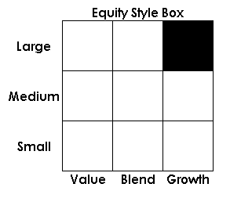

A visual representation of the principle investment characteristics of stocks and stock mutual funds. The style box was created by Morningstar and is a valuable tool for investors to use to determine the risk-return structures of their stocks/stock portfolios and/or how these investments fit into their investing criteria
Also known as a "stock style box".
An equity style box is comprised of nine squares, or categories, with the investment features of stocks/stock mutual funds presented along its vertical and horizontal axes.
For stocks and stock funds, the horizontal axis is divided into three investment style (objective) categories: value, blend (a value/growth mix) and growth. The vertical axis is divided into three company-size (based on market capitalization) indicators: large, medium and small.
A stock investor looking for relative safety would confine his or her stock or stock fund investments to the large category for company size, combined with selections in the value and blend in the investment style categories. For a risk taker, the category combination of small company (small-cap) and growth will provide a high-risk, high-return opportunity.
{kind=link}